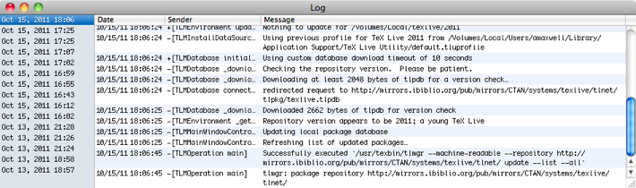

Logging
TeX Live Utility allows you to see debug output, which comes from various sources. Much of this is for debugging TeX Live Utility, but some of it is from underlying tools such as tlmgr that print out status and progress messages.
To show the log window, use the Window menu.

TeX Live Utility tries to show status messages and alerts when a problem occurs, but sometimes it doesn't have enough information to show the underlying cause. In such cases, you may need to examine the log and look for possible problems.
If the content of the Sender column contains tlu_ipctask, the message may be from tlmgr or other command-line tools, wrapped to run with administrative privileges. If it is an Objective-C method name, such as +[TLMDatabase initialize] or -[TLMOperation main], it is almost certainly a debugging message in TeX Live Utility itself.
If you move the top of the log window close enough to the bottom of the main window, it will "stick" to it. In the same way, the right side of the main window can stick to the left side of the log window. This allows them to move as a unit, mainly for long-time users who miss the split pane of older versions.
You can easily select/copy the log output and paste it into a mail message when reporting a problem.